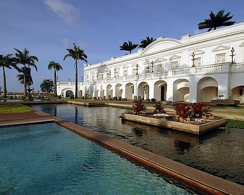
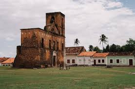
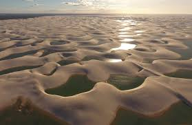
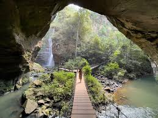
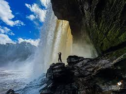

São Luís
São Luís é a capital do Maranhão, conhecida por sua arquitetura colonial portuguesa e rica cultura. A cidade possui um centro histórico com várias construções da época colonial e é famosa por seu carnaval e festas populares.
Alcântara
Alcântara é uma cidade histórica com ruínas coloniais e belas paisagens. A cidade oferece um ambiente tranquilo e é conhecida por suas igrejas históricas e a arquitetura colonial bem preservada.
Lençóis Maranhenses
Os Lençóis Maranhenses são conhecidos por suas dunas de areia e lagoas de água doce. É um dos maiores e mais belos desertos de areia do Brasil, com paisagens impressionantes que atraem turistas de todo o mundo.
Chapada das Mesas
A Chapada das Mesas é uma região com paisagens naturais impressionantes e cachoeiras. É um destino popular para ecoturismo e oferece trilhas e mirantes deslumbrantes.
Carolina
Carolina é famosa por suas belezas naturais e pontos turísticos como a Cachoeira do Prata. É um local ideal para quem gosta de aventuras ao ar livre e contato com a natureza.